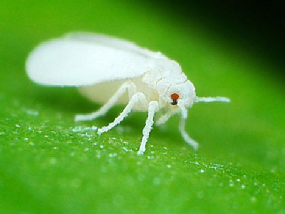

WHAT WE CONTROL?
-

Whitefly
Introduction:-
Whiteflies are small Hemipterans that typically feed on the undersides of plant leaves. They comprise the family Aleyrodidae, the only family in the superfamily Aleyrodoidea. More than 1550 species have been described.
Distribution:-
The whitefly thrives worldwide in tropical, subtropical, and less predominately in temperate habitats. Cold temperatures kill both the adults and the nymphs of the species.
Host Plants:-
Tetraleurodes ursorum, Trialeurodes abutiloneus, Trialeurodes vaporariorum, Trialeurodes floridensis, Abelmoschlus manihot, Aleurodicus disperses, Abelmoschus moschatus, Aleurodicus disperses, Abrus precatorius, Acaudaleyrodes rachipora, Abutilon foliosum, Aleurolobus marlatti, Abutilon theophrasti Medic, Trialeurodes abutiloneus, Abutilon sp, Acacia aneura F. Muell. ex Benth., Aleuromarginatus moundi, Acacia aneura etc.
Biocontrol:-
Its biocontrol agents include Amblyseius swirskii, Delphastus catalinae, Beauveria bassiana etc.
Mealybug
Introduction:-
Mealybugs are insects in the family Pseudococcidae, unarmored scale insects found in moist, warm climates. Many species are considered pests as they feed on plant juices of greenhouse plants, house plants and subtropical trees and also act as a vector for several plant diseases.
Distribution:-
This species is believed to be native to Belize, Costa Rica, Guatemala and Mexico. It has spread to certain Caribbean Islands, Hawaii and French Guiana, and also to parts of Southeast Asia, including India, Indonesia and Thailand. It was discovered in Bradenton, Florida, in the United States in 1998 feeding on hibiscus, and four years later it had been detected on eighteen different plant species in the state. It has since been found in Texas and California and it is likely to become more widely distributed on the Gulf Coast, and perhaps also in crops grown under glass further north in the United States.
Host Plants:-
The mealybug feeds on over 55 plants in more than 25 genera. Economically important host plants include papaya, avocado, citrus, mango, cherry and pomegranate, as well as hibiscus, cotton, tomato, eggplant, peppers, beans, peas and sweet potato. The mango is more affected by the mango mealybug.
Biocontrol:-
Natural enemies of the papaya mealybug include the mealybug destroyer (Cryptolaemus montrouzieri), other lady beetles, lacewings and hoverflies. The larvae of several species of parasitoid wasp in the family Encyrtidae attack the papaya mealybug in its native range.

Angoumois grain moth
Introduction:-
The Angoumois grain moth (Sitotroga cerealella) is a species of gelechioid moth. It is the type species of its genus Sitotroga, placed in the subfamily Pexicopiinae of the twirler moth family (Gelechiidae). Formerly, it was included in the "Chelariinae", which more recent authors do not separate from the Pexicopiinae and usually even do not consider a distinct tribe ("Chelariini") within them. Its synanthropic habits allow it to be easily transported in international grain shipments. Its common name refers to Angoumois, the pre-revolutionary province of France from which it was first scientifically described by G.-A. Olivier in 1789. The province was transformed into the present-day Charente département the following year, and as it has since turned out the species is not originally native to western France.
Distribution:-
It is found in Europe, Australia, Benin, Brazil, China, Indonesia, Japan and Samoa.
Host Plants:-
Its caterpillars feed on grains of Asian rice (Oryza sativa), pearl millet (Pennisetum glaucum), sorghum (Sorghum bicolor), wheats (Triticum) and maize (Zea mays).
Biocontrol:-
Species of the parasitoid genus Trichogramma (Trichogrammatidae) attack the eggs of S. cerealella

APHID
Introduction:-
Aphis gossypii is a tiny insect, an aphid ("greenfly") in the superfamily Aphidoidea in the order Hemiptera. It is a true bug and sucks sap from plants. It is a widely distributed pest of a variety of agricultural crops in the families Cucurbitaceae, Rutaceae and Malvaceae. Common names include cotton aphid, melon aphid and melon and cotton aphid.
Distribution:-
It is found in tropical and temperate regions throughout the world except extreme northern areas. It is common in North and South America, Central Asia, Africa, Australia, Brazil, East Indies, Mexico and Hawaii and in most of Europe.
Host Plants:-
The cotton aphid has a very wide host range with at least 60 host plants being known in Florida and perhaps 700 worldwide. Among cucurbit vegetables, it can seriously affect watermelons, cucumbers, cantaloupes, squash and pumpkin. Other vegetable crops attacked include pepper, eggplant, okra and asparagus. It also affects citrus, cotton and hibiscus.
Biocontrol:-
Predators include midges, lacewings, syrphid fly larvae, anthocorid bugs and ladybirds (ladybeetles). Several members of the Aphidiinae and Aphelinidae wasp families are parasitoids of aphids. One which shows promise as a biocontrol agent is Aphelinus asychis.
Angoumois grain moth
Introduction:-
The Angoumois grain moth (Sitotroga cerealella) is a species of gelechioid moth. It is the type species of its genus Sitotroga, placed in the subfamily Pexicopiinae of the twirler moth family (Gelechiidae). Formerly, it was included in the "Chelariinae", which more recent authors do not separate from the Pexicopiinae and usually even do not consider a distinct tribe ("Chelariini") within them. Its synanthropic habits allow it to be easily transported in international grain shipments. Its common name refers to Angoumois, the pre-revolutionary province of France from which it was first scientifically described by G.-A. Olivier in 1789. The province was transformed into the present-day Charente département the following year, and as it has since turned out the species is not originally native to western France.
Distribution:-
It is found in Europe, Australia, Benin, Brazil, China, Indonesia, Japan and Samoa.
Host Plants:-
Its caterpillars feed on grains of Asian rice (Oryza sativa), pearl millet (Pennisetum glaucum), sorghum (Sorghum bicolor), wheats (Triticum) and maize (Zea mays).
Biocontrol:-
Species of the parasitoid genus Trichogramma (Trichogrammatidae) attack the eggs of S. cerealella
 with &.png)